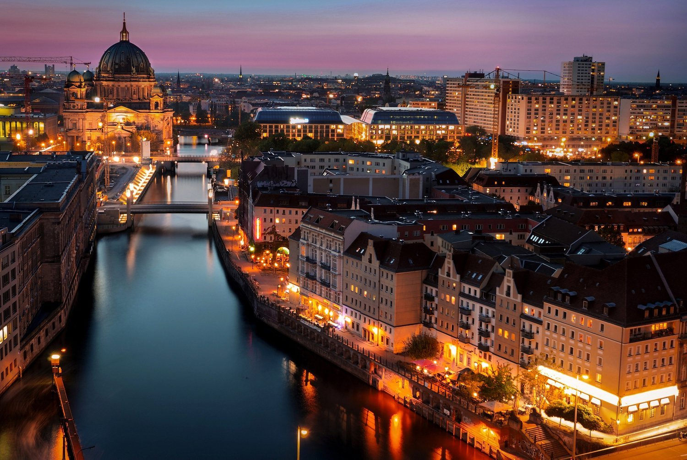

Берлин
Многие мечтают оказаться на острове, и большинство при этом представляет солнце, пальмы, океан и песок. Однако острова бывают разные, и один из самых необычных — это Музейный остров в Берлине, застрять на котором Робинзон Крузо.
Многие мечтают оказаться на острове, и большинство при этом представляет солнце, пальмы, океан и песок. Однако острова бывают разные, и один из самых необычных — это Музейный остров в Берлине, застрять на котором Робинзон Крузо.
Почему Париж это город любви? Считается, что там, где есть искусство, царит романтика, а самым большим примером является сам город любви. 18 век считается романтической эпохой Европы, и Париж сыграл в ней важную роль. Это было время, когда парижские художники использовали музыку, философию, искусство и литературу для выражения своих эмоций.
Прага расположена на берегах реки Влтава в северо-западной части Чехии и практически в центре исторической области Богемия. Ландшафт в окрестностях города типично чешский — холмистый, но не горный, с небольшими перепадами высоты и прекрасными панорамами.

Варшава - самый динамичный город Польши, который славится музеями, дворцами и насыщенный культурной жизнью. Исторические здания здесь гармонично сочетаются с современной архитектурой, а над черепичными крышами восстановленного Старого города возвышаются небоскрёбы. Варшава соединяет прошлое и настоящее Польши, являясь настоящим символом современного польского государства.